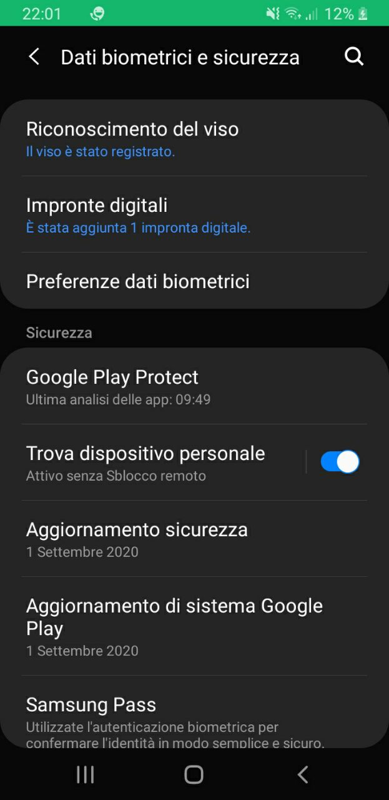
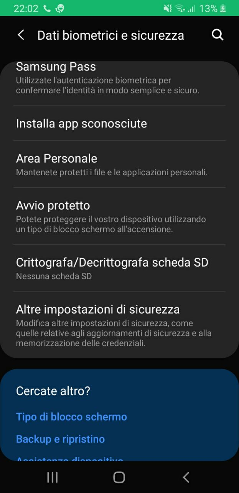

Riconoscimento facciale
Il telefono puo' riconoscere la tua faccia grazie alla videocamera
Impronta digitale
Il telefono puo' riconoscere la tua impronta digitale grazie al sensore posto sul retro
PIN / Password
Il telefono puo' essere sbloccato tramite l'inserimento di un codice PIN numerico o di una passowrd
alfanumerica.
Questa opzione va configurata obbligatoriamente in caso il Riconoscimento facciale o l'impronta digitale non
funzioni
 